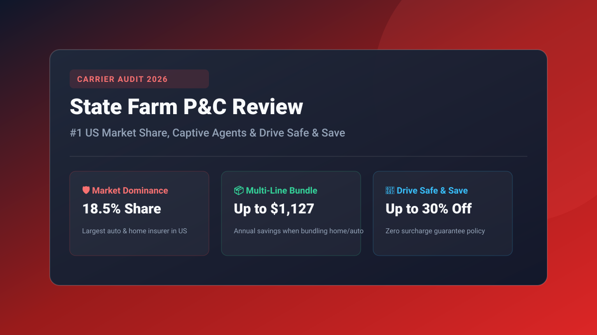

Key Takeaways at a Glance
- Market Leader: State Farm remains the #1 Property & Casualty insurer in the United States, writing over 18.5% of all private auto and 18.2% of all residential home policies.
- Captive Agent Advantage: Operates over 19,000 dedicated local agents across all 50 states, providing personalized in-person claims advocacy and annual coverage reviews.
- Drive Safe & Save™ Guarantee: Generates up to 30% premium savings for safe drivers with an ironclad policy guarantee: your rates will never increase due to telematics driving data.
- Premier Bundling Savings: Households combining homeowners and auto insurance save up to $1,127 annually, making State Farm one of the most cost-effective multi-line carriers.

Benchmark State Farm Against Market Rates
Calculate your expected baseline premiums and see how raising your deductible or bundling home and auto changes your rates. Use our Auto Insurance Calculator and Home Insurance Calculator to project annual costs.
- 1. State Farm Market Dominance: America's #1 Property & Casualty Insurer
- 2. State Farm Rate Benchmarks: Clean Drivers, Bundlers & Property Rates
- 3. Drive Safe & Save™: Why It Outperforms Competitor Telematics
- 4. The Captive Agent Factor: High-Touch Service vs. Digital Autonomy
- 5. Claims Handling, Customer Satisfaction & Financial Solvency
- 6. State Farm vs. Progressive, GEICO & Allstate
- Frequently Asked Questions
1. State Farm Market Dominance: America's #1 Property & Casualty Insurer
Founded in 1922 as a farmer-owned mutual automobile insurer by George Jacob Mecherle, State Farm has expanded over a century to become an undisputed titan of American personal finance. Today, State Farm insures more cars and homes in the United States than any other company in existence.
Unlike publicly traded stock carriers (like Progressive or Allstate) that face quarterly shareholder pressures, State Farm operates as a mutual insurance company. This structure means the company is owned entirely by its policyholders, allowing management to prioritize long-term underwriting stability, aggressive reserve accumulation, and customer retention dividends.
State Farm exclusively utilizes a captive agency distribution model. You cannot purchase a State Farm policy through an independent broker; you must work directly with one of State Farm’s 19,000+ local brick-and-mortar agents or quote online through their proprietary platform.
2. State Farm Rate Benchmarks: Clean Drivers, Bundlers & Property Rates
State Farm consistently ranks among the most affordable mainstream carriers for families, multi-car households, and homeowners looking for combined coverage. While single drivers with severe traffic infractions might find cheaper baseline rates at non-standard specialists, preferred policyholders routinely receive superior rate stability at State Farm.
Below is a national actuarial cost benchmark for State Farm policies across typical 2026 underwriting profiles:
| Policy Type | Annual Premium Benchmark | Monthly Cost | Core Rating Profile |
|---|---|---|---|
| Minimum Liability Auto | $710 – $840 | $59 – $70 / mo | Clean record, statutory state minimums |
| Full Coverage Auto (100/300/100) | $1,980 – $2,180 | $165 – $182 / mo | $500 comp/coll deductible, clean record |
| Young Driver (Age 20 Added to Family) | $2,450 – $2,850 | $204 – $238 / mo | Good Student (B average) + Steer Clear discount |
| Homeowners Insurance ($350k Dwelling) | $1,740 – $2,050 | $145 – $171 / mo | HO-3 replacement cost, $1,000 deductible |
| Home & Auto Bundle Package | $3,120 / combined | $260 / mo total | Saves up to $1,127/year vs standalone policies |
3. Drive Safe & Save™: Why It Outperforms Competitor Telematics
State Farm’s usage-based telematics program, Drive Safe & Save, operates via a smartphone app paired with a small Bluetooth beacon placed on your vehicle’s windshield or integrated directly into connected car software (like Ford, OnStar, or Toyota Audio Multimedia).
The application tracks acceleration, hard braking, sharp cornering, phone distraction while driving, and excessive speed (greater than 8 mph over the posted speed limit).
• The Critical Advantage: Unlike Progressive Snapshot and GEICO DriveEasy, State Farm’s Drive Safe & Save offers a discount-only guarantee. Even if you drive during rush hour, commute past midnight, or brake sharply, your premium will never increase because of your score. Initial enrollment grants an automatic 10% discount, with safe drivers saving between 15% and 30% upon policy renewal.
4. The Captive Agent Factor: High-Touch Service vs. Digital Autonomy
In an era where insurtech startups push automated chatbots and digital-only claims, State Farm’s defining competitive advantage remains its massive local agent infrastructure. Every policyholder is assigned a specific local agent who maintains a physical office in their neighborhood.
• When an Agent Shines: Complex property claims (such as total roof replacement, burst pipes, or multi-car catastrophic accidents) benefit enormously from having a dedicated human advocate who knows local building codes, contractor labor rates, and local claim adjusters.
• The Trade-Off: Captive agents sell strictly State Farm products. If State Farm raises rates in your zip code due to hurricane risk or non-renews specific property types, your agent cannot shop other carriers on your behalf like an independent broker can.
5. Claims Handling, Customer Satisfaction & Financial Solvency
In the J.D. Power US Auto Claims Satisfaction Study, State Farm consistently finishes in the upper quartile of major national carriers, scoring between 875 and 885 out of 1,000 points. Claimants report high satisfaction with the State Farm Select Service® direct repair network, which provides lifetime workmanship guarantees on collision repairs.
In homeowners insurance, State Farm earns high marks for rapid emergency advance payouts following severe tornado, fire, or winter storm freeze claims.
Financial solvency is unmatched: State Farm holds the highest possible rating of A++ (Superior) from credit agency A.M. Best, backed by over $130 billion in surplus reserves. You never have to worry about State Farm lacking liquidity during historic catastrophe claim seasons.
6. State Farm vs. Progressive, GEICO & Allstate
Here is how State Farm compares directly across core Property & Casualty metrics in 2026:
| Factor | State Farm | Progressive | GEICO | Allstate |
|---|---|---|---|---|
| Primary Advantage | Local dedicated agent & high bundle savings | Lenient pricing for drivers with prior tickets | Lowest baseline auto rates for clean drivers | High-limit features & claim satisfaction guarantee |
| National Market Share | 18.5% (#1 in US) | 15.2% (#2 in US) | 12.8% (#3 in US) | 10.1% (#4 in US) |
| Telematics Penalty Risk | ZERO (Discount only) | HIGH (Can increase rates) | MODERATE (Can increase rates) | LOW (Cashback rewards model) |
| Agent Access | 19,000+ local captive offices | Direct online + independent brokers | Direct online / call center focused | 10,000+ captive offices |
| A.M. Best Rating | A++ (Superior) | A+ (Superior) | A++ (Superior) | A+ (Superior) |
Frequently Asked Questions: State Farm
Why is State Farm usually cheaper when bundling home and auto?
State Farm underwrites both auto and home policies directly through its own internal subsidiaries (State Farm Mutual and State Farm Fire & Casualty). Because they control both loss funds, they offer multi-line discounts up to $1,127/year, whereas carriers like GEICO must split margins with third-party home underwriters.
Can State Farm Drive Safe & Save increase my insurance rates?
No. State Farm explicitly guarantees that Drive Safe & Save will not increase your baseline premium, even if your recorded driving score is poor. You will only receive a discount (ranging from 10% to 30%), making it the safest telematics program to test.
Does State Farm offer gap insurance for financed cars?
State Farm offers an endorsement called "Payoff Protector" on vehicles financed through State Farm Bank. For vehicles financed through third-party lenders, State Farm does not sell traditional standalone gap insurance, meaning drivers may need to purchase it through the dealership or a separate lender rider.
Is State Farm better than Progressive for car insurance?
For drivers with a clean record who own a home or want a dedicated local agent, State Farm is almost always better and cheaper than Progressive. Progressive is generally superior for drivers with prior DUIs, multiple speeding tickets, or those seeking online-only self-service.
Compare Other Top Property & Casualty Carriers
State Farm Insurance Review
Local captive agent network, Drive Safe & Save, and bundle math.
Direct GiantProgressive Insurance Review
Snapshot telematics, Name Your Price, and ASI home underwriting.
Budget LeaderGEICO Insurance Review
Direct auto pricing, third-party home insurance, and DriveEasy.
Premium ProtectionAllstate Insurance Review
Claim Satisfaction Guarantee, Drivewise cash rewards & riders.
Trademark & Non-Affiliation Notice: State Farm®, Progressive®, GEICO®, Allstate®, AAA®, Travelers®, Nationwide®, Liberty Mutual®, Farmers®, USAA®, American Family®, Erie Insurance®, Chubb®, and any other third-party insurer trademarks, service marks, logos, or brand names referenced on this website are the sole property of their respective corporate owners. PolicyGuide USA is an independent consumer research and informational publisher. PolicyGuide USA is not an agent, broker, affiliate, subsidiary, or sponsor of, nor is it endorsed by, any insurance carrier mentioned herein. All references to trademarks and brand names are strictly for identification, consumer education, and comparative analysis under the Nominative Fair Use doctrine of the United States Trademark Act (15 U.S.C. § 1125 / Lanham Act).
Not an Underwriting Carrier or Insurance Broker: PolicyGuide USA is strictly an independent educational and financial technology publisher. We do not sell insurance policies, underwrite risk, process claims, issue insurance binders, or act as an insurance brokerage. Any quote submission, policy consultation, or insurance transaction occurs directly between the consumer and licensed third-party insurance providers or underwriters.
Rate Estimates & Actuarial Accuracy: All rate estimates, benchmark premiums, discounts, and tier comparisons presented are illustrative and derived from publicly available rate filings submitted to state Departments of Insurance (DOI), the National Association of Insurance Commissioners (NAIC), and public consumer surveys. Actual policy terms, underwriting criteria, premium pricing, and eligibility are determined solely by the underwriting insurance carrier based on individual applicant risk factors, including driving history, credit-based insurance score, garaging territory, and requested coverage limits.